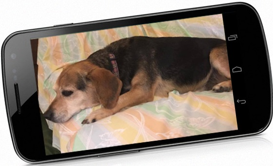

Visit my Rover profile today!
Exactly like the headline reads - I've got 7+ years of previous experience working in medical services at a humane society and I love pets with personality. I have a soft spot in my heart for special needs pets, whether medical or behavioral. And, I enjoy all breeds, especially bully breeds.
Prior to moving to Austin, I worked at the Richmond, VA SPCA's (Society for the Prevention of Cruelty to Animals) veterinary clinic for over seven years as clinic supervisor. I helped shape the clinic as we transitioned from a low-cost spay/neuter clinic to a full service veterinary. I've also worked as a dedicated pet sitter for family and friends for over ten years. And, I took care of my own special needs cocker spaniel, Goldie, for eight years.
Whether in your home (preferable, since your pet will be more comfortable) or mine, your pet(s) will be my number one priority. I'm detailed oriented and have no problem following special instructions, including specialized diets, medication routines, or training/behavioral plans. I'd love to meet your furbabies, happy to set up a meet and greet!
"During her sit, my dog Sophia got seriously ill and had to be taken to the vet. Jana communicated clearly with me an the vet, picked up medication and supplies, and kept an amazing attitude the entire time. When I arrived home everything was tidy, the dogs were calm, and I had a note with last minute updates. I'd definitely book with her again."
"Jana was AWESOME! She made our first Rover experience so incredibly painless. Our fur baby is dog-aggressive, so we hadn't had an experience leaving her at a kennel or doggy day care. In the past, we usually avoided travel or found close friends/family to watch her. Now we feel so empowered to vacation our lives away because we have a reliable, attentive, trustworthy sitter in our address book.
From bringing a tennis ball (the way to Sydney's heart) to our meet-and-greet to leaving us a "welcome home" note with harness recommendations, Jana went above & beyond. We had a change in our travel plans, which pushed back our arrival date/time & Jana was totally flexible with our change in plans."
"My rating is 5 gold stars x's infinity! For all of you nervous first timers on Rover, dogs with quirky behavior, and owners who consider their pets their children...JANA is YOUR go-to sitter! My rescue dog has only ever stayed with family and at day camp with trainers. So when I had a a 3-day trip and no family available, I was nervous to leave her with a stranger, of course. But as soon as Jana walks through your door/meets your dog, she in no longer a stranger."
"Jana is an excellent pet-sitter and we highly recommend her! She's trustworthy, easy to communicate with , warm and friendly and our dog liked her right away. I felt comfortable handing over our dog and our house-keys from the first interaction. She asked good questions, took notes and was very organized and professional. She seemed sincerely concerned about taking care of our dog as best as possible and was very accommodating of my detailed requests."
